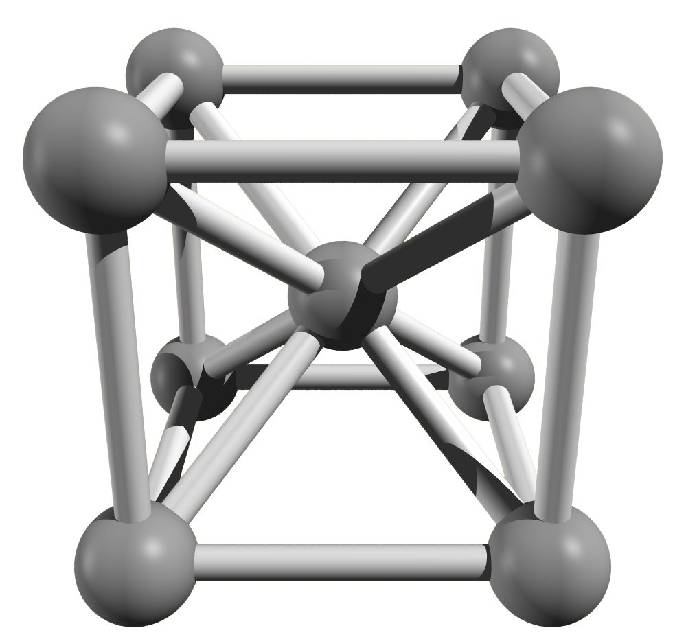
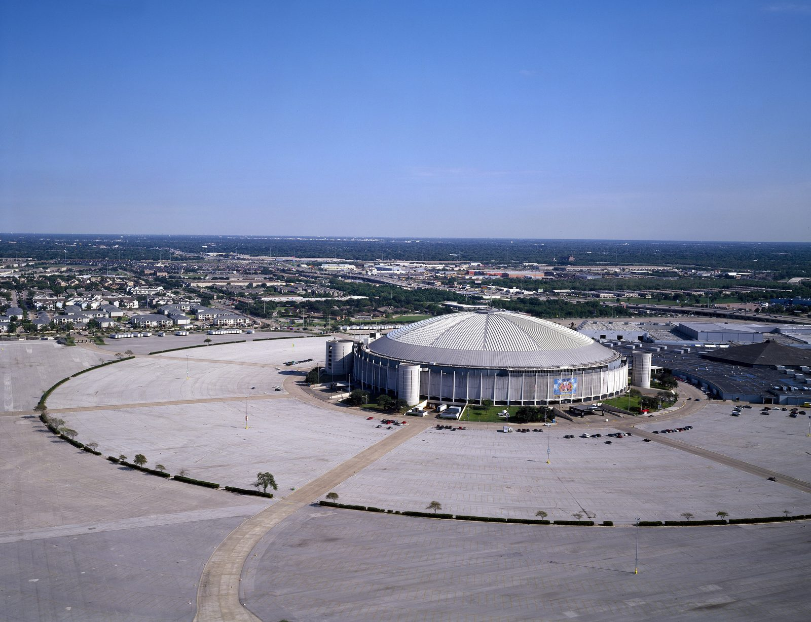
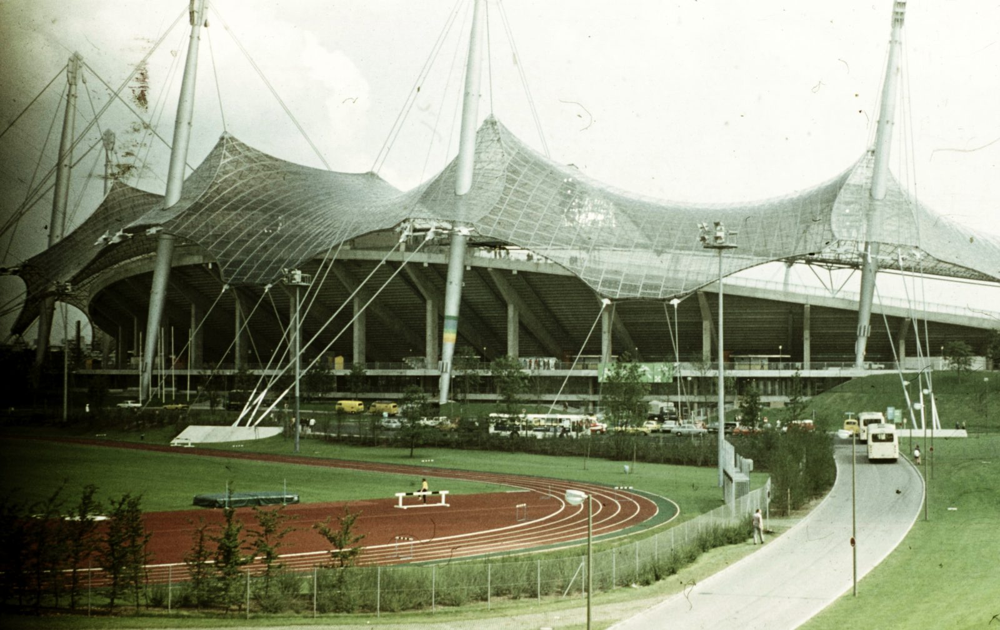

Como isto foi erguido?
Toda semana, a história de uma grande construção que parecia impossível, e de quem resolveu o problema. O projeto, o cálculo, o canteiro. Quantos operários, quanto tempo, quanto custou, quem se feriu e quem morreu.
As obras
Obras do Brasil e do resto do mundo, uma por semana. Cada página tem a ficha técnica completa e a história de como a obra ficou de pé.
-

Cristo Redentor
Corcovado, Rio de Janeiro, Brasil · 1922–1931Uma figura de 38 m, de braços abertos, no cume de uma agulha de granito a uns 700 m do mar, com vento, raio e quase nenhum espaço para canteiro.
BrasilLer a obra → -

Empire State Building
Manhattan, Nova York, Estados Unidos · 1930–1931Montar 86 andares de aço e pedra em 410 dias, no meio de Manhattan, com a obra começando poucos meses depois da quebra da Bolsa de 1929.
MundoLer a obra → -

Ponte Rio–Niterói
Baía de Guanabara, entre Rio de Janeiro e Niterói, Brasil · 1969–1974Atravessar a baía com mais de 13 km de ponte, quase 9 deles sobre a água, com a rocha firme a 50 metros abaixo do mar, um vão alto o bastante para os petroleiros e baixo o bastante para os aviões, com prazo político no auge da ditadura.
BrasilLer a obra → -

Ponte do Brooklyn
East River, entre Manhattan e o Brooklyn, Nova York, Estados Unidos · 1870–1883Assentar duas torres de pedra no fundo de um rio de maré, com homens cavando por baixo de caixas de ar comprimido, numa época em que ninguém sabia por que eles adoeciam ao subir.
MundoLer a obra → -

Usina de Itaipu
Rio Paraná, entre Foz do Iguaçu, Brasil, e Hernandarias, Paraguai · 1975–1984Tirar o rio Paraná do próprio leito para erguer, no seco, uma barragem de 196 m de altura que pertence em partes iguais a dois países.
BrasilLer a obra → -

Represa Hoover
Black Canyon, rio Colorado, divisa entre Nevada e Arizona, Estados Unidos · 1931–1936Erguer a barragem mais alta do mundo no fundo de um cânion do deserto, com o rio Colorado desviado por dentro da montanha e um concreto que, despejado de uma vez, levaria 125 anos para esfriar.
MundoLer a obra → -

Estrada de Ferro Madeira-Mamoré
De Porto Velho a Guajará-Mirim, Rondônia, Brasil · 1907–1912Assentar trilhos por mais de 360 km de floresta, pântano e corredeira na Amazônia, onde duas empresas já tinham desistido e onde quase todo operário caía de malária.
BrasilLer a obra → -

Canal do Panamá
Istmo do Panamá, entre Colón e a Cidade do Panamá, Panamá · 1904–1914Cortar uma cordilheira que desmoronava de volta para dentro do corte, num istmo onde a febre amarela e a malária já tinham derrotado os franceses, e subir navios 26 metros até um lago feito de chuva.
MundoLer a obra → -

Ponte Hercílio Luz
Estreito entre a Ilha de Santa Catarina e o continente, Florianópolis, Santa Catarina, Brasil · 1922–1926Pendurar sobre o mar, com aço trazido de navio dos Estados Unidos e dinheiro que o Estado não tinha, uma ponte de 339,5 metros de vão presa por correntes de barras de aço que, se uma delas partisse, podiam não avisar.
BrasilLer a obra → -

Torre Eiffel
Champ-de-Mars, Paris, Île-de-France, França · 1887–1889Erguer 300 metros de ferro, quase o dobro da construção mais alta do mundo, em pouco mais de dois anos, com a forma ditada pela conta do vento, e abrir a obra a tempo da Exposição Universal de 1889.
MundoLer a obra → -

Congresso Nacional
Praça dos Três Poderes, Brasília, Distrito Federal, Brasil · 1957–1960Erguer, em pouco mais de dois anos de obra e com data marcada, uma cúpula de concreto de 62 metros que parece pousada sobre a laje, outra virada para baixo e duas torres de 28 andares, numa cidade que ainda não existia.
BrasilLer a obra → -

Ponte Golden Gate
Estreito de Golden Gate, entre São Francisco e o condado de Marin, Califórnia, Estados Unidos · 1933–1937Fincar uma torre de aço em mar aberto, na boca de uma baía com correntes de maré e neblina, e pendurar dela o maior vão pênsil do mundo, com cabos fiados fio a fio no próprio local.
MundoLer a obra → -

Estrada de Ferro Santos–Jundiaí
Serra do Mar, entre Santos e Jundiaí, passando por São Paulo, estado de São Paulo, Brasil · 1860–1867Fazer um trem subir cerca de 800 metros de escarpa em 8 quilômetros de mata fechada, com um capital fixo que não pagava nenhuma ferrovia de locomotiva até o alto da serra.
BrasilLer a obra → -

Eurotúnel
Sob o estreito de Dover, entre Folkestone, Kent, Inglaterra, e Coquelles, Pas-de-Calais, França · 1987–1994Cavar três túneis de 50 quilômetros, quase 40 deles sob o mar, a partir de duas costas e de dois países com mapas diferentes, seguindo uma única camada de rocha mole, para que as máquinas se encontrassem no meio sem nenhum dinheiro de governo.
MundoLer a obra → -

MASP
Avenida Paulista, Bela Vista, São Paulo, Brasil · 1960–1968Suspender um museu inteiro oito metros acima da Avenida Paulista, sobre quatro pilares e um vão de mais de 70 metros sem nenhuma coluna no meio, com uma técnica de concreto protendido que o próprio engenheiro teve de inventar.
BrasilLer a obra → -

Burj Khalifa
Downtown Dubai, Dubai, Emirados Árabes Unidos · 2004–2010Erguer 828 metros de concreto e aço sobre rocha fraca e água mais salgada que o mar, num deserto de 50 °C, contra um vento que, a essa altura, faria balançar qualquer forma que se repetisse andar após andar.
MundoLer a obra → -

Estádio do Maracanã
Bairro do Maracanã, Rio de Janeiro, Rio de Janeiro, Brasil · 1948–1950Erguer em menos de dois anos, para uma Copa do Mundo com data marcada, um anel de concreto para mais de 150 mil pessoas coberto por uma marquise em balanço sem um único pilar por baixo.
BrasilLer a obra → -

Farol de Bell Rock
Recife de Bell Rock (Inchcape), Mar do Norte, ao largo de Arbroath, Angus, Escócia, Reino Unido · 1807–1811Erguer uma torre de pedra de uns 35 metros sobre um recife que o mar cobre duas vezes por dia, a cerca de 18 quilômetros da costa, trabalhando só no verão e, no começo, só umas duas horas a cada maré baixa.
MundoLer a obra → -

Edifício Martinelli
Rua São Bento, Avenida São João e Rua Líbero Badaró, centro de São Paulo, São Paulo, Brasil · 1924–1934Levantar 30 andares de concreto armado numa cidade onde quase nenhum prédio passava de cinco, enquanto a Prefeitura embargava a obra, a imprensa falava em desabamento e o público mudava de calçada para não passar embaixo.
BrasilLer a obra → -

Túnel do Tâmisa
Sob o rio Tâmisa, entre Rotherhithe e Wapping, Londres, Inglaterra, Reino Unido · 1825–1843Abrir um corredor de tijolo debaixo de um rio cheio de navios, num leito de lodo e areia encharcada de esgoto, quando a única tentativa anterior no mesmo lugar tinha sido engolida pela água.
MundoLer a obra → -

Ponte Eads
Rio Mississippi, entre St. Louis, Missouri, e East St. Louis, Illinois, Estados Unidos · 1867–1874Apoiar na rocha, sob uns 25 metros de areia que o Mississippi arrastava, três arcos de mais de 150 metros feitos de um metal que nunca tinha sido o principal de uma grande estrutura, sem escorar nada no rio e sem parar os vapores.
MundoLer a obra → -

Ponte de Forth
Estuário do rio Forth, entre South Queensferry (Edimburgo) e North Queensferry (Fife), Escócia, Reino Unido · 1882–1890Atravessar de trem um estuário escocês de mais de 1,5 km, com canais de mais de 60 metros de fundo, logo depois de outra ponte escocesa ter caído numa tempestade levando um trem inteiro, e convencer o público de que a nova não cairia.
MundoLer a obra → -

Edifício Ingalls
Esquina das ruas Fourth e Vine, centro de Cincinnati, Ohio, Estados Unidos · 1902–1904Erguer 64 metros de escritórios sem nenhuma viga de aço, só com concreto e barras torcidas por dentro, quando, segundo as fontes, nenhum prédio de concreto passava de seis andares e engenheiros respeitados juravam que ele nunca chegaria ao telhado.
MundoLer a obra → -

Ponte de Tacoma Narrows
Estreito de Tacoma Narrows, entre Tacoma e a península de Kitsap, Washington, Estados Unidos · 1938–1940Pendurar 853 metros de pista sobre um estreito de ventos fortes com uma viga de apenas 2,4 metros de altura, num tempo em que a engenharia calculava o empurrão do vento, mas não sabia calcular o vento torcendo uma ponte até parti-la.
MundoLer a obra → -

Atomium
Planalto do Heysel, Laeken, Bruxelas, Bélgica · 1956–1958Pôr de pé, em dois anos, um cristal de ferro de 102 metros: nove esferas de aço de 18 metros ligadas por tubos, num cubo posto de pé sobre um vértice, uma forma que ninguém sabia como o vento ia tratar.
MundoLer a obra → -

Astrodome
NRG Park, Houston, Texas, Estados Unidos · 1962–1965Cobrir um estádio de beisebol inteiro com uma cúpula de aço de quase 196 metros de vão, sem uma coluna no meio, e manter climatizado, sem névoa e sem fumaça, um volume de ar onde cabiam dezenas de milhares de pessoas fumando no calor de Houston.
MundoLer a obra → -

Estádio Olímpico de Munique
Parque Olímpico, Munique, Baviera, Alemanha · 1969–1972Pendurar sobre um estádio, um ginásio e uma piscina mais de 70 mil metros quadrados de acrílico numa rede de cabos que ninguém sabia calcular, com prazo fixo e sem saber se a forma era sequer construível.
MundoLer a obra → -

Ópera de Sydney
Bennelong Point, Sydney, Nova Gales do Sul, Austrália · 1959–1973Transformar em concreto um croqui de conchas desenhadas à mão livre, que não correspondiam a nenhuma forma geométrica conhecida e que, por anos, ninguém conseguiu descrever em números, calcular ou fabricar.
MundoLer a obra → -

Plataforma Troll A
Campo de gás de Troll, mar do Norte, a noroeste de Bergen, Vestland, Noruega · 1991–1996Começar, meses depois de outra base da mesma construtora afundar por um erro de cálculo, uma torre de concreto de 472 metros, erguê-la num fiorde, fazê-la flutuar de pé até o alto-mar e assentá-la sobre 303 metros de água.
MundoLer a obra → -

Roda de Falkirk
Tamfourhill, Falkirk, Escócia, Reino Unido · 2000–2002Ligar dois canais separados por 35 metros de desnível, onde antes havia onze eclusas, com uma máquina de mais de mil toneladas que gira inteira levando barcos e água em duas gôndolas que ficam sempre na horizontal.
MundoLer a obra → -

Túnel de Base de São Gotardo
Sob o maciço do São Gotardo, entre Erstfeld (cantão de Uri) e Bodio (cantão do Ticino), Alpes, Suíça · 1999–2016Atravessar os Alpes quase em linha reta por baixo, com até 2.300 metros de montanha em cima, rocha perto dos 50 °C e um trecho em que a própria rocha fechava o buraco à medida que ele era aberto.
MundoLer a obra → -

Ponte de Duge
Divisa entre Duge, no distrito de Shuicheng, Liupanshui, província de Guizhou, e Puli, em Xuanwei, província de Yunnan, China · 2013–2016Estender uma estrada de 720 metros de vão livre a 565 metros sobre um rio, entre dois paredões de calcário cheio de cavernas onde não havia como erguer um pilar do fundo nem, segundo o Economic Daily, lugar seguro para ancorar os cabos de uma ponte pênsil.
MundoLer a obra → -

111 West 57th Street
West 57th Street, Midtown, Manhattan, Nova York, Estados Unidos · 2014–2021Erguer 435 metros de apartamentos sobre uma planta de uns 18 metros de largura, num terreno espremido entre vizinhos e colado a um prédio tombado de 1925, sem que a torre balançasse a ponto de quem mora lá em cima sentir.
MundoLer a obra →


Temas
As obras agrupadas pelo problema que resolveram: pontes, arranha-céus, túneis, estádios, água.
Aqui, número tem fonte
Toda obra grande vem com lenda: o operário enterrado no concreto, a estrutura “construída em X dias”, o número de mortos que ninguém conferiu. Cada dado deste site carrega um selo dizendo quanto se pode confiar nele.
Quando as fontes discordam, mostramos as versões e não escolhemos. Quando ninguém registrou, dizemos isso em vez de inventar.
- 2+ fontes
ConfirmadoConfirmado em duas ou mais fontes independentes.
- 1 fonte
Fonte únicaUma fonte só; o texto diz qual.
- diverge
DivergênciaAs fontes discordam; mostramos as versões e não escolhemos.
- sem registro
Sem registroNinguém registrou. Dizemos isso em vez de inventar.